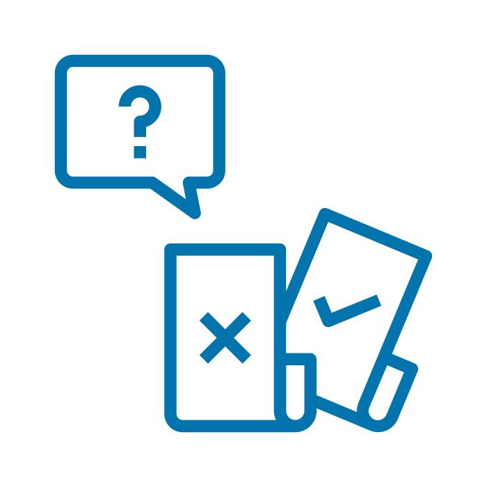
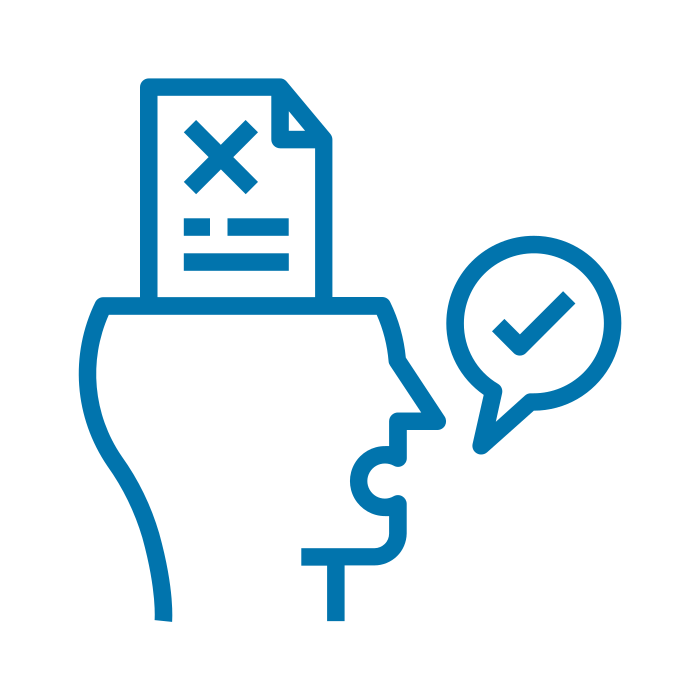
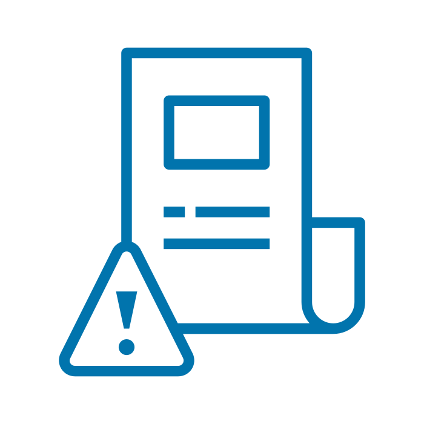

Módulo 4 | Aula 2 As mídias e a tecnologia de informação em saúde
Desinformação e Fake News
O que popularmente chamamos de fake news (notícias falsas) é mais bem definido pelo termo desinformação. A proliferação da desinformação, da informação incorreta e da má informação - que oferecem dados incorretos, incompletos, contraditórios, fraudulentos, incompreensíveis ou obsoletos - pode levar os cidadãos a tomarem decisões prejudiciais à própria saúde ou às políticas públicas de saúde. Diferenciar informação de qualidade e confiável de desinformação virou um grande desafio (LEÃO DE SOUZA, 2020).
Veja as diferenças!

DesinformaçãoSão as informações enganosas que têm deliberadamente a função de enganar. Ou seja, desinformação é uma informação falsa e a pessoa que a divulga sabe que é falsa.

Informação IncorretaÉ uma informação falsa que a pessoa que está divulgando acredita ser verdadeira. A diferença está, portanto, na intencionalidade

Má InformaçãoÉ a informação baseada na realidade, mas usada para causar danos a uma pessoa, organização ou país (por exemplo: uma informação verdadeira, mas que viola a privacidade de uma pessoa sem justificado interesse público)
Fonte: (UNESCO, 2019).
E hoje, a diferença entre ter ou não uma boa saúde pode estar na capacidade de escolher ou não uma informação confiável e relevante – ou seja, de ter bons níveis de LS.
Os casos de desinformação na mídia sempre existiram. Mas a internet e as mídias sociais facilitaram o alastramento de informações falsas em formatos, alcances e velocidades jamais vistos, fazendo com que o fenômeno da desinformação tomasse grandes proporções.
Ainda há poucos mecanismos para controle da qualidade da informação sobre saúde disponível na internet. Na tentativa de dimensionar a confiabilidade da informação, algumas instituições internacionais se propõem a certificar sites ou a orientar os usuários a fazerem suas próprias avaliações sobre a qualidade da informação disponível na internet. Existem alguns sites que oferecem a checagem de fatos (fact checking), um esforço para conferir em curto prazo a veracidade ou não de informações suspeitas e indicar o que é verídico, o que é mito ou informação equivocada (SOUZA, 2020).
Essas iniciativas de avaliação e checagem da informação na internet podem, no entanto, tornar-se limitadas diante do excesso de informação e do lastro deixado pelos conteúdos inverídicos – o que torna mais evidente a necessidade do desenvolvimento das habilidades de avaliação crítica e de LS dos indivíduos.
Os profissionais da APS podem e devem atuar como promotores da LS, e uma das variadas formas de agir nesse sentido é realizando abordagens comunicacionais e ações que mostrem às pessoas como evitar a desinformação.
É sempre importante orientar os usuários a buscarem e confrontarem informações de saúde na internet em fontes confiáveis e oficiais: sites e mídias sociais do Ministério da Saúde, das Secretarias de Saúde, Anvisa, Fiocruz e outras instituições de saúde pública. Os usuários também devem ser alertados sobre a importância de confirmarem as informações sobre saúde obtidas pelas mídias sociais com profissionais da área.
Veja uma lista de cartilhas e guias que dão orientações e exemplos sobre como instruir os cidadãos para evitarem a desinformação:
Jornalismo, fake news & desinformação: manual para educação e treinamento em jornalismo (UNESCO)
Cartilha de Segurança para a Internet: Fascículo Boatos (Cert.br)
Guia Fake News em Debate (De Propósito Comunicação de Causas)
Guia Isso é Fake News? (Laboratório de Políticas Públicas e Internet)
Boatos e desinformação na saúde (PERES, 2017)
Segundo o pesquisador da Fiocruz Cláudio Maierovitch, a saúde sempre foi um terreno fértil para a propagação de boatos e informações inverídicas. Seja para atender a algum tipo de interesse do mercado - como a venda de medicamentos ou outros produtos que alegam ser benéficos para a saúde -, ou como histórias folclóricas - como a crença baseada na cultura popular de que manga e leite não se misturam. Hoje, porém, o fenômeno parece ter ganhado fôlego. Para o professor e pesquisador da Fiocruz, Igor Sacramento, o mundo está mudando de um regime de verdade baseado na confiança das instituições para outro, regulado pelos dogmas, pela intimidade e pela experiência pessoal: “Existe uma disputa de narrativas em que lugares de verdade tradicionais são tensionados por outras vozes e grupos que se organizam nas redes.”, afirma Igor.